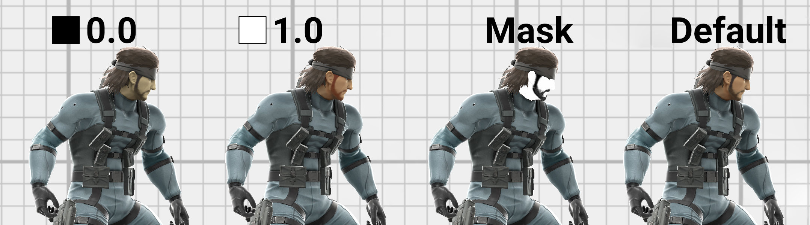
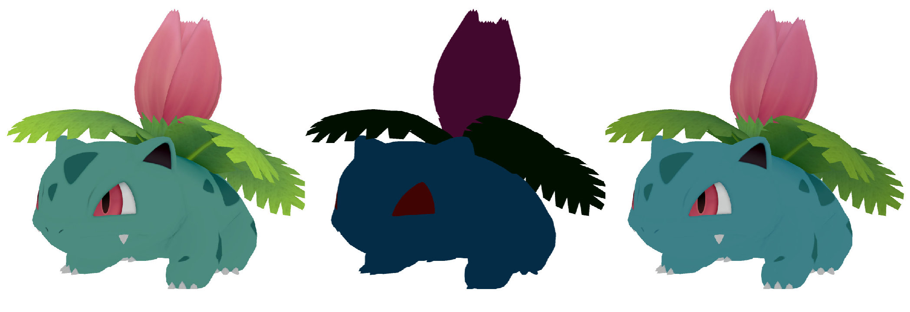
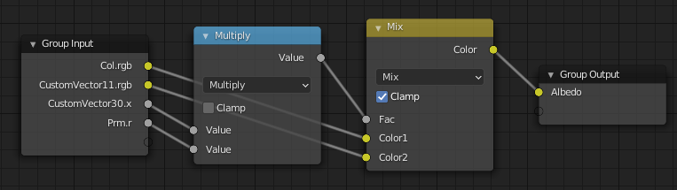

Many fighters have separate materials for approximating the subsurface scattering of skin.
The parameters can also be tweaked for more stylized diffuse shading, such as cel-shading or toon shading.

PRM.r set to 0.0 (left), PRM.r set to 1.0 (center left), Snake's PRM.r mask (center right), PRM.r set to the mask (right)
The overall intensity of the effect is controlled by CustomVector30.x, which should have values between 0.0 and 1.0 to avoid artifacts.
Skin materials always have a metalness of 0. The metalness map stored in the PRM red channel instead acts like a mask for the skin shading effect.
For full effect, both the metalness map and CustomVector30.x should be set to 1.0.
If either CustomVector30.x or the metalness map are 0.0, the material will use the default diffuse shading.
// CustomVector30.x is the overall intensity.
// Metalness acts like a mask.
float sssBlend = CustomVector30.x * metalness;

Ivysaur's col map (left), CustomVector11.rgb (center), and calculated albedo color (right)
The RGB values for CustomVector11 control the subsurface color. This is typically a dark red color to approximate skin. Bright colors will likely cause unwanted bloom.
The blending intensity is controlled by the PRM red channel and CustomVector30.x as described in the previous section.
// Blend the col map color with the subsurface color.
vec3 albedoFinal = mix(col.rgb, CustomVector11.rgb, sssBlend);

The GLSL code converted to a node group in Blender's Shader Editor
CustomVector30.y is multiplied by the diffuse shading to control the smoothness of the shading.
Using a very high value for the second value of CustomVector30 creates a cel-shaded look because diffuse shading is clamped to 1.0.
A very similar technique is used for Breath of the Wild's shaders, for example.